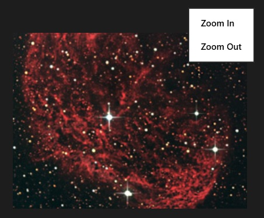

The following code snippet shows how to create a simple context ("right-click") menu:
private async void RightClicked(object sender, RightTappedRoutedEventArgs e) { // Using: Windows.UI.Popups. Create a new popup menu var contextMenu = new PopupMenu(); // Add a command to zoom-in on an image contextMenu.Commands.Add(new UICommand("Zoom In", (contextMenuCmd) => { astroImage.Height+= 100; // Demo assumes there's an Image on the page we can resize })); // Add a command to zoom-out contextMenu.Commands.Add(new UICommand("Zoom Out", (contextMenuCmd) => { astroImage.Height -= 100; })); // Show the context menu at the position the image was right-clicked await contextMenu.ShowAsync(e.GetPosition(this)); }